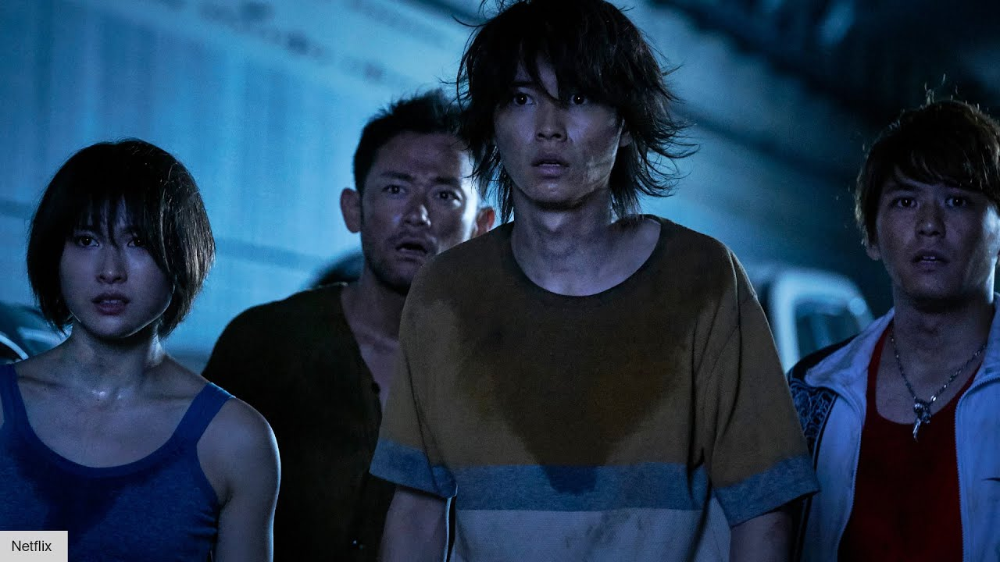
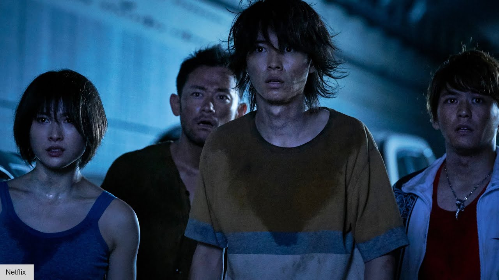

В центре сюжета «Алисы в Пограничье» группа друзей из Токио. Когда они выбираются из укрытия, то обнаруживают, что город заброшен. Вскоре они попадают на арену — и теперь им придется участвовать в опасных играх. Проигравших казнят. В сериале множество второстепенных персонажей, которые нравятся аудитории, но сценаристы не стесняются убивать даже любимчиков. Чаще всего погибают герои, показавшие себя с лучшей стороны. Некоторые из них жертвуют жизнями ради остальных, что делает их смерть еще более драматичной и печальной для фанатов дорамы.
«Алиса в Пограничье» — не просто захватывающее шоу про жестокие игры. В Пограничье судьбы людей зависят от карт — случайных элементов, которые определяют испытания. Яркая метафора жизни, где обстоятельства порой неподвластны человеку, ведь наш путь складывается из наших решений. Каждый персонаж сталкивается с моментами, когда он может либо сдаться, либо продолжать бороться. И этот выбор или делает сильнее, или становится фатальной ошибкой.
Герои Пограничья вынуждены участвовать в жестоких играх, где победа — единственный шанс продлить жизнь. Однако с каждым испытанием сопряжены моральные дилеммы: стоит ли жертвовать другими ради себя и можно ли в таких условиях остаться человеком.
 

| Актёр | Персонаж в дораме | Персонаж в сказке |
| Кэнто Ямадзаки | Рёхэй Арису | Алиса |
| Тао Цутия | Юдзуха Усаги | Белый кролик |
| Нидзиро Мураками | Сюнтаро Чишия | Чеширский кот |
| Аяка Миёси | Анн Ридзуна | Белая Королева |
| Дори Сакурада | Сугуру Нираги | Птица Цуп-Цуп |
| Ая Асахина | Хикари Куина | Гусеница |
| Актёр | Персонаж в дораме | Персонаж в сказке |
| Юки Моринага | Чёта Сэгава | Плотник |
| Кейта Матида | Дайкити Карубэ | Морж |
| Сё Аояги | Агуни Моридзоно | Друг Шяпника |
| Рииса Нака | Мира Кано | Червонная Дама |
| Нобуаки Канэко | Такэру Дамма | Шляпник |
| Цуёси Абэ | Кейти Кудзурю | Бубновый Король |